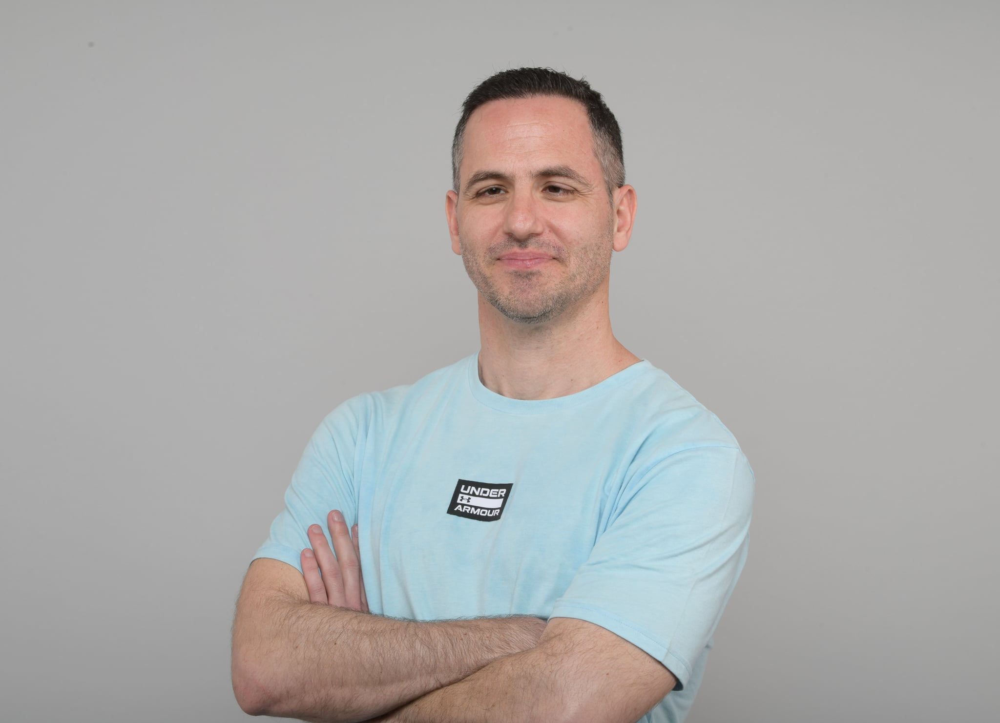

מי אנחנו
My Shoes הוקמה על ידי בארי סלע, יזם ובעלים עם חזון ברור - להביא את מיטב הנעליים מארצות הברית ישירות אליכם. עם ניסיון עשיר בתעשיית האופנה והנעלה, בארי הקים את החנות מתוך אהבה אמיתית לנעליים איכותיות ורצון להציע ללקוחות חוויית קנייה ייחודית.
אנחנו מתמחים ביבוא נעליים מהמותגים המובילים בארה"ב, תוך שמירה על סטנדרטים גבוהים של איכות ושירות. כל זוג נעליים נבחר בקפידה כדי להבטיח שתקבלו את המוצר הטוב ביותר.
15+שנות ניסיון
5000+לקוחות מרוצים
100%מוצרים מקוריים
